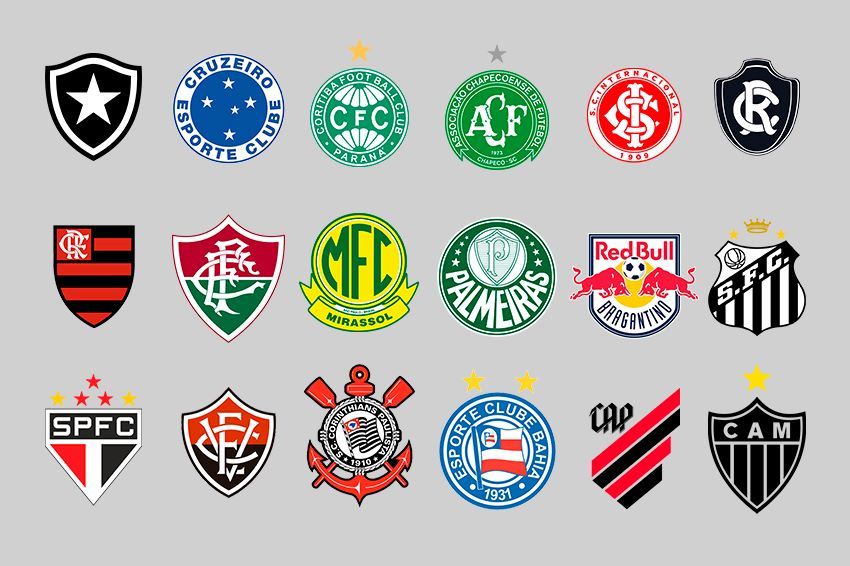

Veja como a proibição das bets está impactando o futebol brasileiro.

Flamengo: Líder isolado da competição com 67 pontos, dono do melhor saldo de gols (+36) e forte candidato ao título após golear o Bahia por 3 a 0.
Palmeiras: Vice-líder encostado com 66 pontos, segue na caça direta ao topo com uma campanha sólida de 19 vitórias.
Athletico-PR: Terceiro colocado com 53 pontos, consolidado no G-4 apesar de vir de derrota para o Palmeiras.
Cruzeiro: Em 4º lugar com 51 pontos, subiu na tabela após uma importante vitória fora de casa contra o Grêmio por 4 a 2.
Fluminense: Ocupa a 5ª posição também com 51 pontos, lutando firmemente pelas vagas da Copa Libertadores.
Atlético-MG: Sexto colocado com 50 pontos, mantém-se firme na briga do G-6 após vencer o Coritiba.
Bahia: Em 7º lugar com 49 pontos, tenta se recuperar do tropeço contra o Flamengo para voltar à zona da Libertadores.
Santos: Oitavo colocado com 45 pontos, estabilizado no meio da tabela e de olho na parte de cima após vencer o Fluminense.
São Paulo: Nono colocado com 42 pontos, respira com mais tranquilidade após bater o Vasco.
Red Bull Bragantino: Ocupa a 10ª colocação com 41 pontos, alternando resultados no meio da tabela.
Botafogo: Em 11º lugar com 39 pontos, busca regularidade para subir na classificação.
Coritiba: Décimo segundo colocado com 39 pontos, flerta com a zona intermediária após derrota na rodada.
Vitória: Ocupa a 13ª posição com 37 pontos, lutando para abrir distância das últimas posições.
Vitória: Ocupa a 13ª posição com 37 pontos, lutando para abrir distância das últimas posições.
Vasco da Gama: Ocupa a 15ª colocação com 35 pontos (um jogo a menos), perigosamente perto do Z-4 após perder para o São Paulo.
Corinthians: Primeiro time fora da zona de rebaixamento em 16º com 33 pontos, vive situação dramática de pressão extrema.
Internacional: Abre a zona de rebaixamento em 17º com 32 pontos, vivendo um momento crítico no torneio.
Grêmio: Em 18º lugar com 31 pontos, está afundado no Z-4 após a dura derrota sofrida para o Cruzeiro.
Clube do Remo: Penúltimo colocado com 26 pontos, vê a permanência na Série A cada vez mais difícil.
Chapecoense: Lanterna isolado da competição com apenas 18 pontos e saldo negativo expressivo (-32), muito próximo do rebaixamento.
Veja como a proibição das bets está impactando o futebol brasileiro.

Diário espanhol repercute atuação de Cristiano Ronaldo, que desperdiçou pênalti e chance sem goleiro em vitória pelo Campeonato Saudita..

Bola de Ouro divulga votação de maior da história com Messi e sem Pelé.